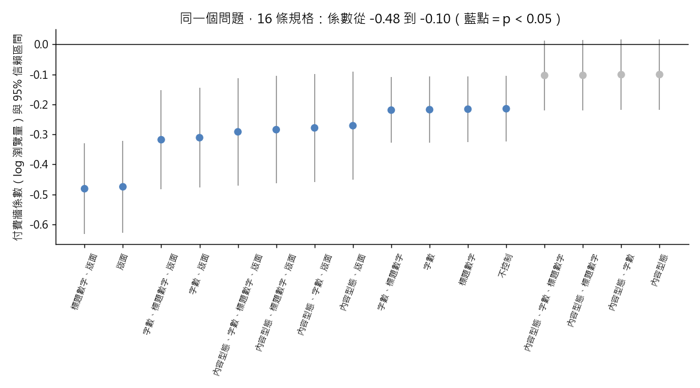

練習 09 - 付費牆讓流量掉幾成
在本單元中，會介紹第 9 題背後的商業問題、它練的是哪一種資料分析，以及從資料到結論的完整做法、程式與圖表。建議先回 Hub - 資料分析練習案例庫 自己試著做一次，再來對照這一頁。
有人會這樣問你
「讀者事業處想再把三百篇稿子推進付費牆。給我一個數字：一篇稿子關進去，瀏覽量大概掉幾成？掉的量換到的訂閱划不划算？」
用到的資料：content_monthly_flat（L1 檔名 content_monthly_2024_10.csv）
對應單元：為什麼這篇會紅 用迴歸找關聯
這一題在商業上要回答什麼
付費牆牽動流量與訂閱之間的取捨。主管要「一個數字」，但這個數字會隨控制條件從不顯著變成少掉四分之一；只交一個數字，等於替主管做了一個沒說出口的假設。
這一題練的是哪一種資料分析
這一題練的是迴歸分析與規格穩健性。係數是「控制了哪些條件之後」的關聯，不是因果。把合理的規格都跑一次、並排列出來（規格曲線，specification curve），比挑一條最好看的交出去更負責。
四組控制變數各自放或不放，一共有 16 條規格可以跑；付費牆係數從 -0.481 到 -0.100 都跑得出來，其中 12 條顯著。只交出你挑中的那一條，等於沒告訴別人你在多大的空間裡找過。見 搜尋空間與河內塔
一步一步怎麼做
- 三條逐步加控制的 OLS 迴歸，依變數都是 log(pv)——瀏覽量右偏得很厲害（中位數 446、最大 5869），取對數以後係數可以直接讀成百分比。
- A：只放 is_paywalled。
- B：加 content_type、log(word_cnt)、has_number_in_headline。
- C：再加 section_name 當版面的固定效果。
- 把三條的 is_paywalled 係數、p 值、R 平方並排看。
工具怎麼選 語言用 Python：statsmodels 的 formula 寫法，C(section_name) 一個字就把 18 個版面展開成虛擬變數，不必自己動手做 18 欄，改規格只要改字串。
看完整程式（Python）
from itertools import combinations
from _kmg import *
import statsmodels.formula.api as smf
f = dedupe(flat()).copy()
f["lpv"] = np.log(f["pv"])
f["lwc"] = np.log(f["word_cnt"])
f["pw"] = f["is_paywalled"].astype(int)
f["hn"] = f["has_number_in_headline"].astype(int)
print("pv 中位數", float(f["pv"].median()))
print("pv 最大值", int(f["pv"].max()))
specs = {"A": "lpv ~ pw",
"B": "lpv ~ pw + C(content_type) + lwc + hn",
"C": "lpv ~ pw + C(content_type) + lwc + hn + C(section_name)"}
exp = {"A": (-0.214, 0.0001, 0.010), "B": (-0.103, 0.083, 0.070), "C": (-0.291, 0.0014, 0.490)}
res = {}
for k, fm in specs.items():
m = smf.ols(fm, data=f).fit()
res[k] = m
b, pv, r2 = exp[k]
print("%s 付費牆係數" % k, float(m.params["pw"]))
print("%s p 值" % k, float(m.pvalues["pw"]))
print("%s R 平方" % k, float(m.rsquared))
print("C 規格換算成流量變化", float(np.exp(res["C"].params["pw"]) - 1))
rate = f.groupby("section_name")["pw"].mean()
full = sorted(rate[rate == 1].index)
print("100% 進付費牆的版面", full)
others = rate.drop(full)
print("其他版面多半在 15% 以下", bool((others < 0.15).mean() >= 0.5))
print("其他版面的付費比率：" + "、".join("%s %.0f%%" % (k, v * 100) for k, v in others.sort_values().items()))
# 課堂概念：搜尋空間。四組控制變數各自放或不放，一共 16 條規格
CTRL = {"內容型態": "C(content_type)", "字數": "lwc", "標題數字": "hn", "版面": "C(section_name)"}
curve = []
for k in range(5):
for combo in combinations(CTRL, k):
m = smf.ols("lpv ~ pw" + "".join(" + " + CTRL[c] for c in combo), data=f).fit()
lo, hi = m.conf_int().loc["pw"]
curve.append({"spec": "、".join(combo) or "不控制", "b": float(m.params["pw"]), "lo": float(lo),
"hi": float(hi), "p": float(m.pvalues["pw"])})
curve = pd.DataFrame(curve).sort_values("b").reset_index(drop=True)
print("可以跑的規格數", len(curve))
print("付費牆係數 最小", float(curve["b"].min()))
print("付費牆係數 最大", float(curve["b"].max()))
print("在 0.05 下顯著的規格數", int((curve["p"] < 0.05).sum()))
sig = [bool(res[k].pvalues["pw"] < 0.05) for k in "ABC"]
fig, ax = plt.subplots(figsize=(9, 5))
colors = ["#4f81bd" if p < 0.05 else "#bbbbbb" for p in curve["p"]]
ax.errorbar(curve.index, curve["b"], yerr=[curve["b"] - curve["lo"], curve["hi"] - curve["b"]],
fmt="none", ecolor="#999999", lw=1)
ax.scatter(curve.index, curve["b"], c=colors, zorder=3)
ax.axhline(0, color="black", lw=0.8)
ax.set_xticks(curve.index, curve["spec"], rotation=70, fontsize=8)
ax.set_ylabel("付費牆係數（log 瀏覽量）與 95% 信賴區間")
ax.set_title("同一個問題，16 條規格：係數從 -0.48 到 -0.10（藍點＝p < 0.05）")
save_fig(fig, "ex09_spec_curve.png")
程式開頭的 from _kmg import * 載入共用的讀檔、去重、換幣別與畫圖函式，內容放在 練習 01 - 月會上的則數對不對。
結果會看到什麼
同一個問題，三條線給出三個答案。A：係數 -0.214、p=0.0001、R 平方 0.010。B：係數 -0.103、p=0.083，照慣例就是「不顯著」，R 平方 0.070。C：係數 -0.291、p=0.0014、R 平方 0.490。只交 B 會寫成「付費牆對流量沒有顯著影響」，只交 C 會寫成「有牆的稿子平均少掉約四分之一的瀏覽量」（exp(-0.291)-1 ≈ -25%）。差別在於付費牆不是抽籤決定的：財經、科技、環境、深度調查這四個版面 100% 進付費牆，其他版面多半在 15% 以下，不控制版面，你估到的其實是「財經跟娛樂的流量差多少」。
- 其他版面的付費比率：影音專題 1%、島上會議 2%、社會 4%、活動 6%、評論 7%、體育 7%、短影音 8%、國際 8%、政治 9%、生活 9%、娛樂 11%、選物誌 13%、教育 14%、品牌內容 16%
圖怎麼讀

16 條規格各跑一次付費牆係數，照係數大小排好。藍點是 p < 0.05、灰點不顯著，直線是 95% 信賴區間。係數從 -0.48 到 -0.10，有沒有控制版面決定你站在哪一端。繼續練習
上一題 練習 08 - 自助平台點擊率真的比較高嗎、下一題 練習 10 - 發稿前預估流量的模型，或回到 Hub - 資料分析練習案例庫 挑別的題目。
學生版｜更新於 2026-09-13 11:59